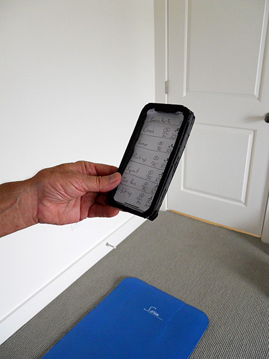
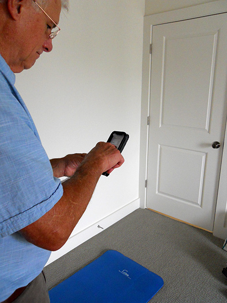

IDSE103 - Assignment #4
Mary Hannah Duhon
User Experiment




Prototype Evolution
My design for the AR MyTrainer function changed pretty significantly as I was making the prototype. I had a hard time figuring out how to enable people to go forward and back through the different screens giving advice about how to do an exercise while also giving them the ability to jump completely out of that feature and escape back to the main screen. I experimented with a bunch of different arrows and menu symbols before settling on the design I went with for the physical prototype. Also, I had to experiment a bit to figure out how to convey that a screen was supposed to be showing the view from your phone’s camera while also putting buttons and text on the screen, interrupting the projection of the camera’s view.
Prototype Feedback and Improvements
I figured out that I should have gone with a lower fidelity prototype. Because I was having testers slide the paper screens in and out of a phone frame, the testers did not always line up the screen and the prototype phone exactly. This made the top menu button hard to see, so one tester got trapped in the “tips” feature and could not navigate back to the exercise list menu.
Next, both testers had a hard time figuring out how to navigate to the Check My Form AR feature. I had wrongly thought they would remember that option from the initial menu screen, but instead they got locked into loops of looking at tips about how to do an exercise. In the future, I would include that feature on the tail end of the exercise tips screen, so that it would be a more natural flow: tips about how to do a push-press, and then the option to try one and get feedback about whether you are doing it right.
When they did get to the Check My Form feature, the take-a-photo-of-the-person-doing-the-exercise-in-the-star-position screen was confusing for both testers. I think I would have to find some way to simulate a tutorial video like the one inkHunter does. Also, one of my testers pointed out that since the whole app is reliant upon futuristic technology, I should just skip that step since in this hypothetical future the app would just be able to read the subtleties of your posture without having to do an initial scan to assess your proportions.
Also, in the future I would have more time to train my assistant acting as the AR avatar. Since I knew the people I was getting to help me were not experienced athletes themselves, I made the test tasks involve simple exercises: push-ups and sit-ups. I didn’t want to have to train my assistant to do a deadlift or push-press before filming. However, looking back this was a mistake because it made the whole exercise seem meaningless for me testers; they already knew how to do a push-up and sit-up, so why would they need an app to advise them? It would have been better to train my assistants to do a more complicated exercise so that when I asked my testers to figure out where you should put you feet to do a burpee, or how to hold your head during kettlebell swings, that would have been a more meaningful task.
Finally, it would have been better to set the scene more for my testers. I just sort of jumped into having them use the app, but I think the exercise would have been more meaningful if I had set the scene by telling them (after they had looked at the initial screen and given me their first impressions) to imagine that they were in a gym working out with their buddy (my assistant). Then I could have given them the tasks and it would have all made more sense.